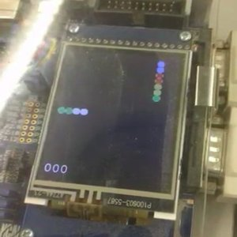

Hello! Welcome to my portfolio page.
Marble Kombat is a 2D puzzle game for the Keil MCB 1700 board, where the player takes the role of a cannon fighting off a train of incoming marbles. The game will utilize the various peripheral devices on the Keil board as inputs, and it will render the graphics on the board’s LCD display. The game will put the player in third-person bird’s-eye view of a cannon which shoots coloured marbles at an incoming train of marbles. The player must prevent the train from reaching the end of the track, and the game will end if that happens. Marbles fired at the train will attach to it and become part of it. Matching three or more marbles of the same color in a row will destroy them. The marble at the very rear of the train is the “conductor”, and is the only marble that moves independently. All other marbles only move when in contact with another moving marble, all the way back to the conductor. In addition, the player will have access to one spare marble, which can be swapped with the currently chambered marble if so desired.
Marble Kombat will involve the use of four peripherals of the Keil MCB 1700 board as follows: Joystick, potentiometer, push button, and LEDs. The uses of each are outlined below: The potentiometer will be used to adjust the angle at which the cannon will fire. The push button will be used to switch between the chambered and spare marbles. The joystick press will be used to shoot the marbles, and to also start the game. The LEDs will display a combo counter, which doubles the player’s score when full.
The program will involve 3 main concurrent tasks, as well as initialization code and ISRs. The main concurrent tasks used are as follows: Task 1 will constantly read the status of the potentiometer and input it to task 2. Task 2 will check the inputs received, handle the game logic, output the results to task 3. Task 3 will output the results to the LCD and LEDs when task 2 prompts it. There will also be ISRs for push-button and joystick presses.
Perform initialization code for the board, peripherals, and tasks. Task 1 will constantly read the potentiometer and send the results to task 2. The ISRs for the push-button and joystick will set flags for task 2 when called. Task 2 will check the input flags, perform the game logic, then prompt task 3 to run. Task 3 will display the results to the LEDs and LCDs, then signal to task 3 it is done.
